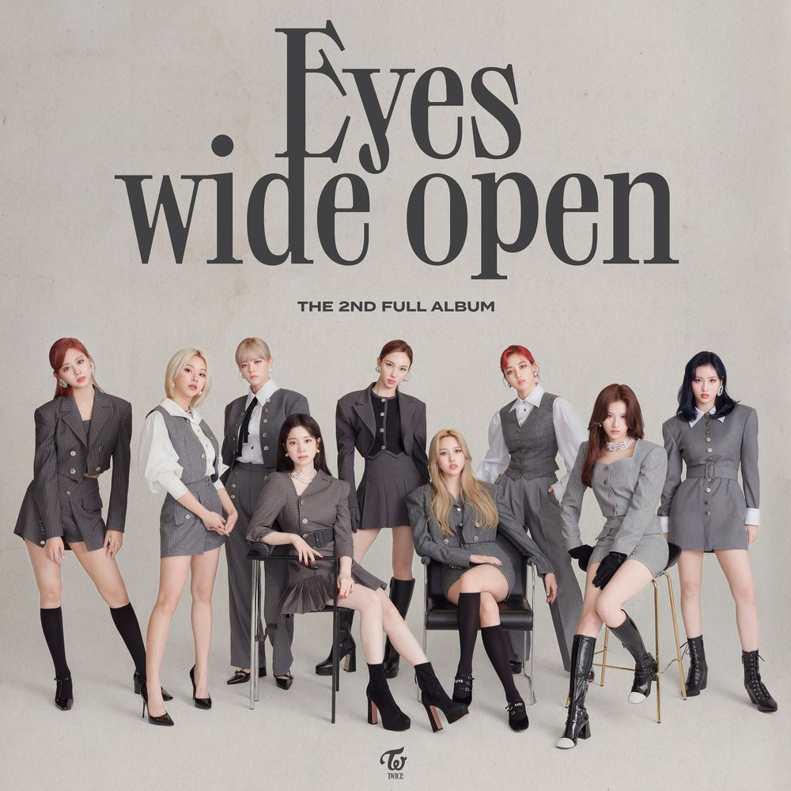

그룹명인 TWICE는 눈으로 한 번, 귀로 한 번 감동을 준다는 의미로 박진영이 SIXTEEN을 진행하는 동안 지은 이름이다. T와 W가 연결된 공식 로고는 멤버 채영이 직접 디자인했고, 트와이스 공식 활동 전방면에 사용되고 있다. 공식 SNS 계정, 유튜브 채널에서는 매 앨범마다 콘셉트 색에 맞게 로고를 업데이트해서 프로필 사진으로 쓰고 있다. 시그니처 사운드는 멤버들이 다 함께 "TWICE!"라고 외치는 사운드다.
멤버들의 파이팅 구호는 "TWICE! TWICE! 잘하자!"이다. TWICE의 뜻처럼 그룹명을 두 번 외치고, 잘하자라는 구절은 사실 막내의 명언 덕분에 탄생한 구호이다. 쯔위가 SIXTEEN 게릴라 콘서트 홍보미션 도중 카페에서 빙수를 먹다가 뜬금없이 자라자. 라고 하는 바람에 너무 뜬금포인데다 서툰 발음과 합쳐져 임팩트가 하도 강하다 보니 멤버들이 따라하면서부터 구호로 정착되었다.